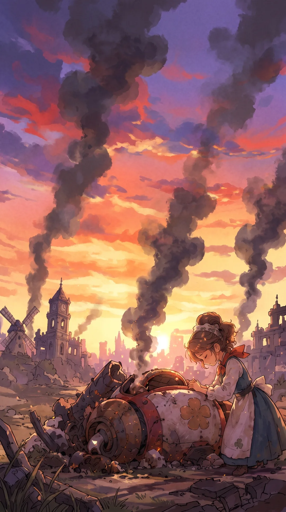

▼
| WASD / 矢印 | 歩く |
| マウス | カメラを回す |
| ホイール | カメラの距離 |
| Shift | 走る |
| Space | ジャンプ（空中でもう一度押し続けるとジェット噴射） |
| F | パンを発射 |
| クリック | 人と話す（近くで「話す」が出たとき。Space / Enter で次へ） |
| C | カメラをふわおの正面の向きへ |
| V | 三人称 / 一人称 切り替え |
| T | アニメ調 / 元の見た目 切り替え |
| N | 押している間、時間を早送り |
| R | スタート地点に戻る |
| Esc | 一時停止 |
| S | オープニングを飛ばす（⏭ ボタンでも） |
